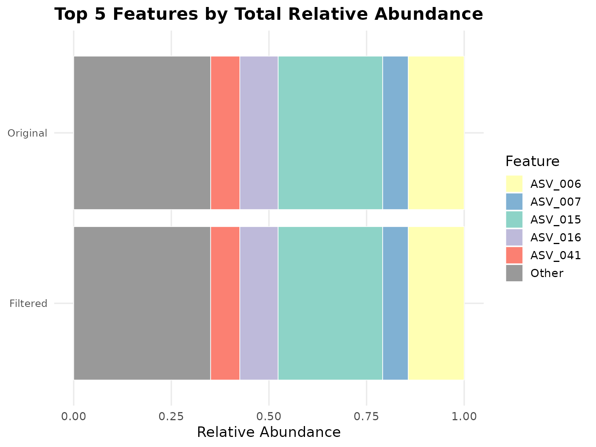

vignettes/featuretablefilter.Rmd
featuretablefilter.RmdThe featuretablefilter package provides functions for
filtering microbiome feature tables based on coverage and abundance
criteria. It is designed to help researchers remove low-quality samples
and rare features from their datasets while maintaining comprehensive
quality control metrics.
The package includes a function to load feature tables in common formats. We also ship an example feature table for illustration.
# Load example data shipped with the package
data(example_feature_table)
head(example_feature_table[, 1:4])
#> #OTU ID Sample_001 Sample_002 Sample_003
#> 1 ASV_001 1245 892 1567
#> 2 ASV_002 567 423 689
#> 3 ASV_003 234 178 289
#> 4 ASV_004 89 67 112
#> 5 ASV_005 3456 2789 4123
#> 6 ASV_006 12345 10234 14567
dim(example_feature_table)
#> [1] 50 21
# Load from a TSV file
file_path <- system.file("extdata", "example_feature_table.tsv",
package = "featuretablefilter")
table <- load_feature_table(file_path)
head(table[, 1:4])
#> #OTU ID Sample_001 Sample_002 Sample_003
#> 1 ASV_001 1245 892 1567
#> 2 ASV_002 567 423 689
#> 3 ASV_003 234 178 289
#> 4 ASV_004 89 67 112
#> 5 ASV_005 3456 2789 4123
#> 6 ASV_006 12345 10234 14567Remove samples with total read count below a fixed threshold:
data(example_feature_table)
filtered_table <- filter_by_coverage(example_feature_table, min_reads = 1000)
ncol(filtered_table)
#> [1] 21The Median Absolute Deviation (MAD) method identifies outliers using the formula: $$\\text{cutoff} = \\max(\\text{floor}, \\text{median} - \\text{multiplier} \\times \\text{MAD})$$
data(example_feature_table)
est <- estimate_mad_cutoff(example_feature_table, multiplier = 3, floor = 0)
est$cutoff
#> [1] 31530.63
filtered_table <- filter_by_coverage(example_feature_table, min_reads = est$cutoff)
ncol(filtered_table)
#> [1] 21The Interquartile Range (IQR) method uses Tukey’s fences: $$\\text{cutoff} = \\max(\\text{floor}, Q1 - \\text{multiplier} \\times \\text{IQR})$$
est <- estimate_iqr_cutoff(example_feature_table, multiplier = 1.5, floor = 0)
est$cutoff
#> [1] 34525.38
filtered_table <- filter_by_coverage(example_feature_table, min_reads = est$cutoff)
ncol(filtered_table)
#> [1] 21Instead of using absolute sequencing depth cutoffs, you can filter samples based on estimated ecological completeness using coverage estimators. These methods assess whether a sample has been sequenced deeply enough to capture the diversity present.
Good’s coverage estimator measures the probability that the next read will belong to a previously observed feature:
$$C = 1 - \\frac{n_1}{n}$$
where is the number of singletons (features with exactly one read) and is the total number of reads.
good_cov <- estimate_good_coverage(example_feature_table, target_coverage = 0.95)
good_cov$mean_coverage
#> [1] 0.9999796
result <- filter_by_coverage_estimator(
example_feature_table,
method = "good",
target_coverage = 0.95,
verbose = FALSE
)
ncol(result$table)
#> [1] 21Chao’s coverage estimator is more conservative and accounts for unseen species/features using both singletons and doubletons:
chao_cov <- estimate_chao_coverage(example_feature_table, target_coverage = 0.90)
chao_cov$mean_coverage
#> [1] 0.96552
result <- filter_by_coverage_estimator(
example_feature_table,
method = "chao",
target_coverage = 0.90,
verbose = FALSE
)
ncol(result$table)
#> [1] 21Remove features with low total read counts:
filtered_table <- filter_features_by_abundance(
example_feature_table,
threshold = 5,
mode = "absolute",
min_samples = 1
)
nrow(filtered_table)
#> [1] 43Filter features based on proportion of total reads:
filtered_table <- filter_features_by_abundance(
example_feature_table,
threshold = 0.001,
mode = "relative",
min_samples = 1
)
nrow(filtered_table)
#> [1] 31A powerful filtering approach that combines abundance thresholds with prevalence requirements using AND/OR logic.
result <- filter_features_joint(
example_feature_table,
abundance_threshold = 0.001,
prevalence_threshold = 0.3,
mode = "relative",
logic = "OR"
)
result$n_features_after
#> [1] 31This method calculates an absolute threshold based on a percentage of the minimum-coverage sample:
filtered_table <- filter_by_relative_cutoff(
example_feature_table,
min_coverage = 1000,
relative_threshold = 0.01,
remove_features = TRUE
)
nrow(filtered_table)
#> NULLThe run_filtering_pipeline() function orchestrates a
complete workflow:
data(example_feature_table)
result <- run_filtering_pipeline(
input = example_feature_table,
output_dir = tempdir(),
prefix = "analysis1",
cov_filter_method = "mad",
cov_threshold = 3,
abun_filter_method = "absolute",
abun_threshold = 10,
generate_report = FALSE,
verbose = FALSE
)
#> Evaluating 20 threshold values...
#> Completed 4/20 (threshold = 1.6316)
#> Completed 8/20 (threshold = 2.4737)
#> Completed 12/20 (threshold = 3.3158)
#> Completed 16/20 (threshold = 4.1579)
#> Completed 20/20 (threshold = 5.0000)
#>
#> Scree analysis complete.
#> Elbow point: threshold = 1.2105, retention = 100.0%
#> Final retention: 100.0% at threshold = 5.0000
#> Warning: Removed 4 rows containing missing values or values outside the scale range
#> (`geom_line()`).
#> Warning: Removed 1 row containing missing values or values outside the scale range
#> (`geom_hline()`).
#> Warning: Removed 1 row containing missing values or values outside the scale range
#> (`geom_line()`).
nrow(result$filtered_table)
#> [1] 41
ncol(result$filtered_table)
#> [1] 21Compute comprehensive QC metrics comparing original and filtered tables:
qc <- compute_filtering_qc(example_feature_table, result$filtered_table, top_n = 10)
qc$feature_retention_percent
#> [1] 82
qc$sample_retention_percent
#> [1] 100
plot_coverage_histogram(example_feature_table)
plots <- plot_qc_comparison(example_feature_table, result$filtered_table)
names(plots)
#> [1] "plots"
plot_top_features_stacked(example_feature_table, result$filtered_table, top_n = 5)
#> $plot_path
#> NULL
#>
#> $orig_top_features
#> [1] "ASV_015" "ASV_006" "ASV_016" "ASV_041" "ASV_007"
#>
#> $filt_top_features
#> [1] "ASV_015" "ASV_006" "ASV_016" "ASV_041" "ASV_007"
#>
#> $orig_rels
#> ASV_015 ASV_006 ASV_016 ASV_041 ASV_007 Other
#> 0.26798082 0.14342487 0.09794964 0.07482170 0.06520458 0.35061840
#>
#> $filt_rels
#> ASV_015 ASV_006 ASV_016 ASV_041 ASV_007 Other
#> 0.26805685 0.14346556 0.09797743 0.07484293 0.06522308 0.35043416
#>
#> $plot
sessionInfo()
#> R version 4.6.1 (2026-06-24)
#> Platform: x86_64-pc-linux-gnu
#> Running under: Ubuntu 24.04.4 LTS
#>
#> Matrix products: default
#> BLAS: /usr/lib/x86_64-linux-gnu/openblas-pthread/libblas.so.3
#> LAPACK: /usr/lib/x86_64-linux-gnu/openblas-pthread/libopenblasp-r0.3.26.so; LAPACK version 3.12.0
#>
#> locale:
#> [1] LC_CTYPE=C.UTF-8 LC_NUMERIC=C LC_TIME=C.UTF-8
#> [4] LC_COLLATE=C.UTF-8 LC_MONETARY=C.UTF-8 LC_MESSAGES=C.UTF-8
#> [7] LC_PAPER=C.UTF-8 LC_NAME=C LC_ADDRESS=C
#> [10] LC_TELEPHONE=C LC_MEASUREMENT=C.UTF-8 LC_IDENTIFICATION=C
#>
#> time zone: UTC
#> tzcode source: system (glibc)
#>
#> attached base packages:
#> [1] stats graphics grDevices utils datasets methods base
#>
#> other attached packages:
#> [1] featuretablefilter_0.99.0 BiocStyle_2.40.0
#>
#> loaded via a namespace (and not attached):
#> [1] tidyr_1.3.2 sass_0.4.10 generics_0.1.4
#> [4] lattice_0.22-9 digest_0.6.39 magrittr_2.0.5
#> [7] evaluate_1.0.5 grid_4.6.1 RColorBrewer_1.1-3
#> [10] bookdown_0.47 fastmap_1.2.0 Matrix_1.7-5
#> [13] jsonlite_2.0.0 BiocManager_1.30.27 mgcv_1.9-4
#> [16] purrr_1.2.2 scales_1.4.0 permute_0.9-10
#> [19] textshaping_1.0.5 jquerylib_0.1.4 cli_3.6.6
#> [22] rlang_1.3.0 splines_4.6.1 withr_3.0.3
#> [25] cachem_1.1.0 yaml_2.3.12 otel_0.2.0
#> [28] vegan_2.7-5 tools_4.6.1 parallel_4.6.1
#> [31] dplyr_1.2.1 ggplot2_4.0.3 BiocGenerics_0.58.1
#> [34] vctrs_0.7.3 R6_2.6.1 stats4_4.6.1
#> [37] zoo_1.8-15 lifecycle_1.0.5 S4Vectors_0.50.1
#> [40] fs_2.1.0 htmlwidgets_1.6.4 MASS_7.3-65
#> [43] ragg_1.5.2 cluster_2.1.8.2 pkgconfig_2.0.3
#> [46] desc_1.4.3 pkgdown_2.2.1 pillar_1.11.1
#> [49] bslib_0.11.0 gtable_0.3.6 glue_1.8.1
#> [52] systemfonts_1.3.2 xfun_0.60 tibble_3.3.1
#> [55] tidyselect_1.2.1 knitr_1.51 farver_2.1.2
#> [58] patchwork_1.3.2 nlme_3.1-169 htmltools_0.5.9
#> [61] labeling_0.4.3 rmarkdown_2.31 pheatmap_1.0.13
#> [64] compiler_4.6.1 S7_0.2.2